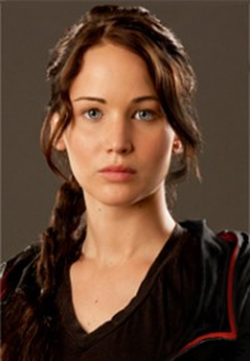
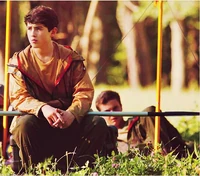
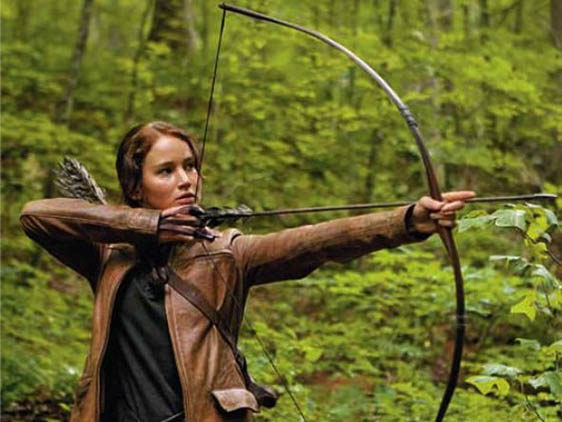
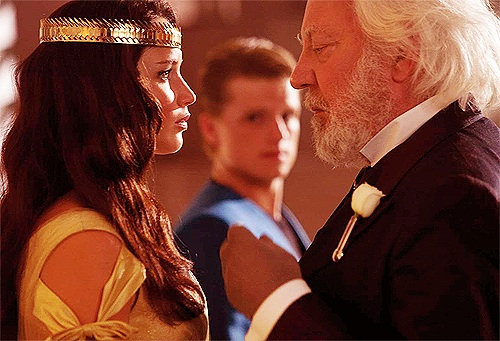

Genre: Fiction
Rebellion vs. Conformity-the main character fights against "fitting in", fights against the old ways
The Frontier-A survival story, an adventure in an unexplored area
Individualism-Individual rights, Human rights, free will, individual desires
Suffering/Sports as Entertainment-in reality TV and sports the people/players become objects and lose their humanity
"The rules of The Hunger Games are simple. In punishment for the uprising, each of the twelve districts must provide one girl and one boy, called tributes, to participate. The twenty four tributes will be imprisoned in a vast outdoor arena...Over a period of several weeks, the competitors must fight to the death. The last tribute standing wins...this is the Capitol's way of reminding us of how totally we are at their mercy. How little chance we would stand of surviving another rebellion...To make it humiliating as well as torturous, the Capitol requires us to treat the Hunger Games as a festivity, a sporting event pitting every district against the others" (18-19).
Place: Panem (formerly North America), Panem is the Latin word for "bread"
Time: Post-apocalyptic, some time in the future after natural disaster (droughts, storms, fires, floods, rising oceans) and war (the Dark Days)
District 12: Katniss' home district, a coal mining district, very poor, "District 12, where you can starve to death in safety" (6).
The Hob-the black market trading place located in an abandoned factory.
The purpose of this chapter is to:
It is reaping day in Panem.The main character Katniss Everdeen spends the morning hunting and foraging for food. In the afternoon every citizen of District 12 and Panem attends the lottery to select "the tributes" for the Hunger Games. At the end of Chapter 1, Katniss' sister, Prim's name is chosen as the female tribute of District 12. Prim's name is entered in the lottery only 1 time, it is her first year of eligibility, she is 12 years old.
Characters

Katniss Everdeen-main character and narrator, 16 years old, father deceased, lives with her mother and sister, Primrose, and the family cat. Family is very poor. Katniss goes to school and spends all her free time hunting, gathering and foraging for food so her family can survive.
Primrose Everdeen-Katniss' younger sister (12 years old), nicknamed Prim, she is young and delicate like a flower. Prim is beautiful with blonde hair and blue eyes. She is learning to be an apothecary, she has a talent with plants and animals (goat and cat). At the end of Chapter 1, Prim's name is "plucked" from the glass bowl on reaping day, ie she is chosen as the Tribute from District 12 in the Hunger Games.

Mother-comes from a wealthy merchant family, has "good clothes" from her past. Mother is an apothecary (druggist with plants), was very depressed after her husband's death and neglected Katniss and Prim (almost died of starvation). Katniss resents her mother's weaknesses.
Father-deceased. Died in a mining explosion "he was blown to bits in a mine explosion. There was nothing to even bury" (5). Katniss' father was an expert hunter and bow maker. This is his legacy to his daughter.
Gale-Katniss' best friend, hunting partner. He is older (18). He is responsible for his family (mother and 3 younger siblings). Katniss depends on Gale.
Madge Undersee-The Mayor's daughter, comes from a more privileged social class in District 12. Madge keeps to herself just like Katniss, they end up together at school, ie they eat lunch together, partner for sports activities. Madge wears a very expensive, small, gold circular pin on reaping day.
Mayor Undersee-leader of District 12.

Effie Trinket-District 12's escort
for the Hunger Games. Effie is from the Capitol. she has pink hair,
wears brightly colored clothes and has a strange accent (from the
Capitol). Effie is a bit of a snob and wishes she were the escort
for a "better district". Effie's signature is "Happy Hunger
Games! And may the odds
be ever in your favor!"
(19).

Haymitch Abernathy-"a paunchy, middle-aged man, a drunk" (19). A past tribute for District 12. One of the two victors of the Hunger Games from District 12. Ironically, the two winners from District 12 are Haymitch, an alcoholic, the other winning tribute from District 12 is dead.
The purpose of Chapter 2 is Rebellion.
Katniss refuses to let Prim be sacrificed in the Hunger Games. "In District 12, where the word tribute is pretty much synonymous with corpse, volunteers are all but extinct" (22).
Katniss volunteers to be the female tribute from District 12.
The crowd rebels against the lottery by refusing to applaud. "I stand there unmoving while they take part in the boldest form of dissent they can manage. Silence. Which says they do not agree. We do not condone. All of this is wrong" (24).
The crowd offers Katniss a gesture of defiance against the capital. "Almost every member of the crowd touches the three middle fingers of their left hand to their lips and holds it out to me. It is an old and rarely used gesture of our district, occasionally seen at funerals. It means thanks, it means admiration, it means good-bye to someone you love". (24).

Peeta Mellark, the baker's son and 16 years old is chosen as the male tribute.
Katniss is disturbed that Peeta is chosen and recalls the time 5 years ago, when Peeta saved her family from starvation. Peeta and his mother saw Katniss searching for food in the trash bin behind their bakery. Peeta's mother chases Katniss away from the garbage cans. Peeta purposely and defiantly burned 2 loaves of bread, suffered a blow to the face from his mother for his mistake and threw the loaves of bread to Katniss.
The next day at school, Katniss is
embarrassed when she sees Peeta and looks down at the ground and
sees the first dandelion of the spring (food). The bread gave
Katniss hope and the dandelion inspires Katniss to forage for food
in the woods. "To this
day, I can never shake the connection between this boy, Peeta
Mellark, and the bread that gave me hope, and the dandelion that
reminded me that I was not doomed" (32).
Katniss is now worried that she might
have to kill the boy who saved her family years ago, Peeta,
during The Hunger Games. "Oh well, I think. There will be
twenty-four
of us. Odds are someone else will kill him before I do. Of course,
the odds have not been very dependable of late"
(33).
In Chapter 3, Katniss is taken to the Justice Building in District 12 and says good-bye:
To her mother and Prim
It is revealed to the reader how much Katniss despises her mother's emotional weaknesses. Katniss makes her mother promise to stay strong and keep Prim safe.
Peeta Mellark' father, the baker
gives Katniss a gift of cookies and promises to take care of Prim. "to keep an eye on the little girl. Make sure she's eating" (38).
Madge, the mayor's
daughter
Madge urgently gives Katniss her
gold circle pin to wear in the Arena during The Hunger
Games to remind Katniss of home (there is a small bird on the
pin).
Gale
Says good-bye to Katniss. Promises to try and keep her family fed and tells Katniss she must find a bow in the Arena, it will be her best chance to survive. (foreshadowing). "you've got to get your hands on a bow. That's your best chance" (39).
Leaving District 12
Katniss and Peeta travel by car and then by train with Effie Trinket to the Capital. District 12 is in the Appalachian Mountains and the Capitol of Panem is in a place once called the Rocky Mountains (Denver).
Katniss has never been in a car or on a train. She is fed amazing food and watches the reapings from all the districts on TV.
As Katniss travels to the Capitol, she realizes Madge has given her a mockingjay pin. The mockingjay is a symbol of rebellion. Mockingjays "a whole new species that could replicate both bird whistles and human melodies...the mimic a range of human vocal sounds...my father was particularly found of mockingjays...it's like having a piece of my father with me, protecting me" (43-44).
Katniss and Peeta meet their mentor, Haymitch Abernathy. He is drunk, vomits and then falls in the mess. "You know your mentor is your lifeline to the world these Games...Haymitch can be the difference between your life and your death!" (46).
The purpose of Chapter 4 is to reveal to the reader that Katniss is independent, trusts no one (except Gale) and is suspicious of Peeta's motives.
After Haymitch has vomited, Peeta volunteers to clean him up. Katniss thinks Peeta is kind. "I'm pondering the reason why he insists on taking care of Haymitch and all of a sudden I think, It's because he being kind. Just as he was kind to give me the bread. The idea pulls me up short. A kind Peeta Mellark is far more dangerous to me than an unkind one Kind people have a way of working their way inside me...I decide to have as little as possible to do with this boy" (49). Katniss throws the cookies from Peeta's father out the train window. Ironically, the cookies land in a patch of dandelions.
Katniss remembers the past and reveals that her mother is an apothecary who has a book about plants. Katniss used her mother's book and notes from her father to find edible foods for their survival.
The reader learns that Katniss is also named after a plant like her sister Primrose. "In the late summer, I was washing up in a pond when I noticed the plants growing around me. Tall with leaves like arrowheads. Blossoms with three white petals. I knelt down in the water, my fingers digging into the soft mud, and I pulled up handfuls of the roots. Small, bluish tubers that don't look like much but boiled or baked are as good as any potato. 'Katniss,' I said aloud. It's the plant I was named for. And I heard my father's voice joking, 'As long as you can find yourself, you'll never starve' " (52).
Primrose is named after a pale yellow delicate, beautiful flower that blooms in the spring. In contrast, Katniss is named after a sensible, practical root plant, that doesn't look like much. Interestingly, the plant has arrow like leaves and you have to get dirty to dig it out of the mud. The katniss plant may not be pretty, but you can survive by eating it.
The
next morning of the train, Peeta fights with Haymitch because he is
already drunk and Katniss uses her knife to stab the table
preventing Haymitch from having another drink. Haymitch realizes
that Peeta and Katniss are fighters.Haymtich is impressed with
Katniss and Peeta, he agrees to mentor and give them advice if they
don't interfere with his drinking. "All right, I'll make a deal
with you.
You don't interfere with my drinking, and I'll stay sober enough to
help you...But you have to do exactly what I say"
(58).
Haymitch's first piece of advice for Katniss and Peeta is to do everything the stylist for the Hunger Games tell them to do so that Katniss and Peeta will be attractive and increase their popularity with the audience.
As the train pulls into the Capitol, Peeta rushes to the window to wave to the crowd. Katniss realizes Peeta is trying to win over the crowd and has a plan to survive the Games. Katniss is suspicious and does NOT trust Peeta. "He hasn't accepted his death. He is already fighting hard to stay alive. Which also means that kind Peeta Mellark, the boy who gave me the bread, is fighting hard to kill me" (60).
The
purpose of Chapter 5 is allies and to emphasize
that the Hunger Games are entertainment and a
media circus.
Cinna,
District 12's stylist, is an ally for Katniss. Cinna
requested to be the Stylist for District 12. Through Cinna's
costume idea and public relations ideas, he creates instant
likability, celebrity and popularity for Katniss and
Peeta."I asked for
District Twelve...our job is to make the District Twelve tributes
unforgettable...I want the audience to recognize you when you're in
the arena, says Cinna dreamily, Katniss the girl who was on fire"
(64-67).
During the opening ceremonies (similar to the opening of the Olympics) Katniss and Peeta lean on and depend on each other. Katniss and Peeta hold hands (a sign of rebellion). Katniss pulls back once again. She refuses to allow Peeta to be her ally. "A warning bell goes off in my head. Don't be so stupid. Peeta is planning how to kill you. I remind myself. He is luring you in to make you easy prey. The more likeable he is, the more deadly he is" (72).
The purpose of Chapter 6, is to emphasize the dangers of the Dystopian Society of Panem.
The Capitol is immensely wealthy
In Chapter 6, Katniss and Peeta are at the Training Center. The Center is luxurious, their is an abundance of food, clothing and comfort.
Avox
At dinner, Katniss recognizes the red-haired servant girl serving her food. The servant girl shakes her head vigorously in denial. Effie Trinket points out that Katniss could not possibly know the servant because the servant is an Avox. An Avox is "Someone who committed a crime. They cut her tongue so she can't speak, says Haymitch, She's probably a traitor of some sort. Not likely you know her" (77). Peeta comes to Katniss' rescue by stating that the servant girl resembles a girl from their school.
The Roof
After dinner Katniss and Peeta go to the roof of the Training Center to talk. The roof is surrounded by an electrical field that prevents anyone from falling off the roof or jumping off to commit suicide, to get out of the Games.
So they will not be overheard by any listening devices, Katniss and Peeta talk quietly and use the noise from hundreds of wind chimes to drown out their voices. Katniss explains to Peeta how she and Gale did see the Avox girl and a boy one day while they were hunting in the woods. The girl and boy had escaped from the Capitol District and were running away. Suddenly a hovercraft appeared in the sky. The girl was captured in a net and hauled into the hovercraft. The boy was speared (dead) and hauled into the hovercraft. Katniss feels guilty over this event because she is convinced the Avox girl saw her and asked for help. Katniss was to afraid and selfish to help.
Relationships
Peeta learns from Katniss that she is not related to Gale, and considers Gale her friend.
Katniss learns from Peeta that his father, the baker, Mr. Mellark, knew her mother from his childhood. Katniss' mother did grew up in town and her family were merchants like the Mellarks.
Guilt
As Katniss is falling asleep, the red haired Avox returns to her room. Katniss realizes she stood by and watched the girl's capture and did nothing. The girl was then mutilated (tongue cut out).Katniss is just like everyone who watches The Hunger Games.
The purpose of Chapter is
to reveal the strengths of the tributes
and to emphasize again that
Katniss is suspicious and untrusting and has a
temper.
In Chapter 7, Peeta and Katniss train for several days in the Training Center.
Katniss has special talents: she is good with a knife, has some knowledge of trapping, using snares, deadly accurate with a bow, can hunt for food and is strong and fast.
Peeta is strong from lifting 100 pound bags of flour and can wrestle.
Haymitch decides they will train together, must always be seen together, getting along and should not reveal any special skills or talents to the other tributes.
Katniss and Peeta will only reveal their skills/talents to the Gamemakers in their private sessions.
Katniss and Peeta are to spend their time learning new skills at the Training Center (tying knots, camouflage, throwing spears, starting fires, constructing a shelter).
In the Center Peeta excels at camouflage and hand to hand combat.
Katniss sweeps the edible wild plants category.
Other Tributes
2 tributes from the other 12 districts of Panem. Almost all of them are bigger than Katniss.
Career Tributes
"the kids from the wealthier districts, the volunteers, the ones who have been fed and trained throughout their lives for this moment. The tributes from 1, 2 and 4 traditionally have this look about them...In District 12, we call them the Career Tributes, or just the Careers. And like as not, the winner will be one of them" (94).
Rue
One of the smallest and youngest tributes from District 11 watches Katniss and Peeta carefully, she seems to be following them around. Rue reminds Katniss of her sister Prim.
"Rue is a small yellow flower that grows in the Meadow. Rue. Primrose. Neither of them could skip the scale at seventy pounds" (99).
The Gamemakers
On the final day of training, each tribute performs privately for the Gamemakers. Because Katniss and Peeta are from District 12 they will go last.
The Gamemakers are bored and drunk on wine and don't pay attention to Katniss while she demonstrates her archery skills. The Gamemakers are paying more attention to the dead pig on their buffet table. She becomes furious and shoots an arrow at the Gamemakers table skewering the apple in the pig's mouth.
The purpose of Chapter 8 is to show that the Games are ENTERTAINMENT, especially for the citizens of the Capitol.
Katniss leaves the Training Center and goes to her room and cries tears of frustration and fear that she has angered the Gamemakers and will be arrested.
Before the Hunger Games begin, each tribute is awarded points from 1-12 based on their skills."the Gamemakers announce a score for each player. It gives the audience a starting place for the betting that will continue throughout the Games. The number, which is between one and twelve, one being irredeemably bad and twelve being unattainably high, signifies the promise of the tribute. The mark is not a guarantee of which person will win. It's only and indication of the potential a tribute showed in training" (104).
Katniss is sure she will get a low
score and that the Gamemakers will make her life hell in the Arena
and kill her painfully.
The
Scores
The scores are televised to the entire country.
The Careers scores are in the 8-10 point range, as expected.
Rue surprisingly scores a 7, she must have an "impressive skill".
Peeta scores an 8, a strong score.
Katniss scores an unimaginable 11. After all, the Gamemakers are putting on a show, Katniss will make "good television" ie they liked her temper, they need contestants with some heat.
Gale
Katniss dreams this night of her friend Gale. She remembers their fathers died in the same mining accident, how they worked together to feed their families. She has strong feelings for Gale, he is the only person she trusts.
Change of Strategy
In the morning Katniss and Peeta will begin training for their TV interviews before the Games. Katniss is told that Peeta wants to be coached alone.
In Chapter 9, Katniss and Peeta prepare for the televised interviews before the Hunger Games.
The purpose of the interviews is to get the viewers to "like you" and sponsor your monetarily during the Games.
Katniss and Peeta must "perform" well during the interviews, to get sponsors and have any chance of surviving the Games.
Training with Effie
Effie work with Katniss on "presentation" for the Interviews. She tries to teach Katniss to walk in high-heeled shoes, wear a dress like a lady, to smile and look friendly.
Training with Haymitch
Haymitch works with Katniss to prepare her for the interview questions.
He states, "So far, you're shining like a star. You volunteered to save your sister. Cinna made you look unforgettable. You've got the top training score. People are intrigued, but no one knows who you are. The impression you make tomorrow will decide exactly what I can get you in terms of sponsors" (116).
Katniss fails miserable training for the Interviews. She is NOT humble, NOT vulnerable, NOT fierce, NOT witty, NOT funny, NOT sexy, and NOT mysterious.
At the end of the session Katniss says, "I am no one at all" (118). Haymitch is drinking and he is sure the audience will hate her.
The Avox
That night Katniss is angry, she eats alone in her room and smashes all the dishes.
The red-haired Avox comes into the room. Katniss apologizes to the Avox for not helping her when the Avox was captured.
The Avox is kind to Katniss, washes Katniss' face and helps her clean up the room.
The Interview
All 24 tributes are interviewed on TV.
Cinna, the Last Hope
Cinna creates a beautiful dress for Katniss of flames made out of jewels. "I am not pretty. I am not beautiful. I am as radiant as the sun" (121).
He gives her this advice about her interview, "Suppose, when you answer the questions, you think you're addressing a friend back home... I'll be sitting on the main platform with the other stylists. You'll be able to look right at me. When you're asked a question, find me, and answer it as honestly as possible" (122).
Caesar Flickerman-The Host of the Hunger Games
Bert Parks-Master of Ceremonies for the Miss America Pageant
Dick
Clark-American
Band Stand, New Year's Rockin' Eve

Flickerman has hosted the Hunger Games for over 40 years. "His appearance has been virtually unchanged during all that time. Same face...same hairstyle...same ceremonial suit" (124).
"Caesar really does his best to make the tributes shine. He's friendly, tries to set the nervous ones at ease, laughs at lame jokes, and can turn a weak response into a memorable one by the way he reacts" (125).
The TV interviews for the Hunger Games are similar to the Interviews in the Miss America Pageant. In the Miss America Pageant, Bert Parks was the host for 25 years. Parks sang the same song to the winner, "There She is, Miss America".
Plastic Surgery in the Capitol
"They do surgery in the Capitol, to make people appear younger and thinner. In District 12, looking old is something of an achievement since so many people die early. You see an elderly person, and you want to congratulate them on their longevity, ask the secret of survival. A plump person is envied because they aren't scraping by like the majority of us. But here it is different. Wrinkles are desirable. A round belly isn't a sign of success" (125).
Katniss' Interview
Katniss looks amazing in her dress of flames.
She looks at Cinna throughout her interview.
She answers the questions honestly.
The audience LOVES her.
Peeta's Interview
Peeta charms the TV audience and sponsors with stories about working in the bakery and taking a shower in the Capitol.
The audience likes Peeta and laughs at his answers
Caesar Flickerman, the host, asks Peeta if he has a girlfriend "back home".
Peeta reveals he is in love with Katniss on national TV to the entire country of Panem.
Peeta replies, "There is this one girl. I've had a crush on her ever since I can remember. But I'm pretty sure she didn't know I was alive until the reaping...she came here with me" (130).
During Peeta's Interview with Caesar Flickerman, the crowd goes wild when Peeta declares his love for Katniss.
After the Interviews, Katniss is furious at Peeta because he shared something personal about her on TV. Katniss feels she looks weak and foolish on TV.
Haymitch tells Katniss that Peeta did something wonderful, Peeta
made Katniss look desirable. "You are a fool. Do you think he hurt you?
That boy just gave you something you could never achieve on your
own...He made you look desirable...The star-crossed lovers from
District 12!" (135). LITERARY
ALLUSION.
Katniss realizes they will get more sponsors if the audience believes she and Peeta are "star-crossed lovers" like Romeo and Juliet. It is part of the strategy to win The Games. Haymitch tells Katniss, " You're golden, sweetheart. You're going to have sponsors lined up around the block" (137).
Effie's Good-Bye to Katniss and Peeta
"Effie takes both of us by the hand and, with actual tears in her eyes, wishes us well. Thanks us for being the best tributes it has ever been her privilege to sponsor. And then, because it's Effie and she's apparently required by law to say something awful, she adds 'I wouldn't be at all surprised if I finally get promoted to a decent district next year' " (138).
Haymitch's Final Advice
"When the gong sounds, get the hell out of there. You're neither of you up to the blood bath at the Cornucopia. Just clear out, put as much distance as you can between yourselves and the others, and find a source of water. Got it?...Stay alive" (139).
Peeta's Rebellious Spirit
Katniss and Peeta cannot sleep because they are anxious about the Hunger Games that will begin tomorrow.
They both sneak up to the roof.
Peeta is sure he will die in the Games.
Peeta admits to Katniss, "I've never been a contender in these Games anyway...My best hope is not to disgrace myself and...I want to die as myself. Does that make sense?...I don't want them to change me in there,. Turn me into some kind of monster that I'm not...When the time comes, I'm sure I'll kill just like everybody else.I can't go down without a fight. Only I keep wishing I could think of a way to...to show the Capitol they don't own me. That I'm more than just a piece in their Games" (141-142).
Leaving for the
Games

The next morning Katniss boards a hovercraft with her stylist, Cinna, to be transported to the Game Arena.
A tracker device is injected into Katniss and all of the tributes so they can be followed/tracked in the Arena.
Katniss dresses in an outfit that all of the tributes will wear.
The Launch
Room
The launch room is under the Hunger
Games Arena, where the tributes make their final preparations for
the Games with their stylists. "In the Capitol they call it the
Launch Room. In the districts, it's referred to as the Stockyard.
The place animals go before slaughter" (144).
The Hunger Games Arena
"Everything is brand
new, I will be the first and only tribute to use this launch room.
The arenas are historic sites, preserved after the Games. Popular
destinations for Capitol residents to visit, to vacation. Go for a
month, rewatch the Games, tour the catacombs, visit the sites where
the deaths took place. You can even take part in reenactments. They
say the food is excellent" (145). IRONY
The Mockingjay Pin
Cinna places the Mockingjay pin Katniss got from Madge Undersee to her shirt and says, "It's your district token, right?...Remember what Haymitch said. Run, find water. The rest will follow. And remember this I'm not allowed to bet, but if I could, my money would be on you...Good Luck girl on fire" (145-147).
The Arena
Katniss is raised up through a
cylinder into the arena, and she hears the voice of the announcer
say, "Ladies and
Gentlemen, let the 74th Hunger Games begin"
(147).
The Olympics
There are several similarities between the Olympics and the Hunger Games.
Held on a regular schedule. Olympics every 4 years and Hunger Games every year
Both have Competitors from different districts/countries
Both are held in a new and different arena
Both have "Opening Ceremonies" a Parade and each district/country wears their own "costume"
Olympic Arenas/Hunger Games Arena are used once
The arenas become resort/vacation/athletic training centers in the future
74th Hunger Games
2016 Summer Olympics, officially known as the Games of the XXXI Olympiad, commonly known as Rio 2016, are a major international multi-sport event that will take place in Rio de Janeiro, Brazil, from 5 to 21 August 2016.
Chapter 11-Pages 148-160 "Crossing the Threshold"
In the Arena
The tributes are all transported to the Arena at once and must remain on a metal circle for 60 seconds, wait for the gong to sound before they can move.
Katniss sees a lake to her right and the woods to her left.
Katniss remembers Haymitch's advice "Just clear out, put as much distance as you can between yourselves and the others, and find a source of water" (149).
"Haymitch's directive to immediately find water was not arbitrary. I won't last long without it. For a few days, I'll be able to function with unpleasant symptoms of dehydration, but after that I'll deteriorate into helplessness and be dead in a week, tops" (154).
Katniss looks around the Cornucopia and sees a tarp and a bow with arrows, She thinks she can reach them first and wants to go for it.
"I see the bounty waiting there before me...There, resting on a mound of blanket rolls, is a silver sheath of arrows and a bow already strung, just waiting to be engaged. That's mine, I think, It's meant for me" (149). FORESHADOWING.
She looks at Peeta, he shakes his head "NO" and she is distracted.
The Gong sounds, Katniss runs and grabs the tarp and an orange back pack.
She fights with the Boy from District 9 over the back pack and suddenly he coughs blood all over Katniss. He is DEAD.
Katniss grabs the back and RUNS.
The female tribute from District 2 (a Career Tribute) is chasing Katniss and throwing knives at her.
One of the knives lodges in the backpack.
Yes, Katniss has a weapon.
Katniss continues to run into the woods, to find cover and water.
When she looks back she sees that several tributes are already DEAD!
The Cornucopia
"the Cornucopia, a giant golden horn shaped like a cone with a curved tail, the mouth of which is at least twenty feet high, spilling with the things that will give us life here in the arena. Food, containers of water, weapons, medicine, garments, fire starters. Strewn around the Cornucopia are other supplies, their value decreasing the farther they are from the horn. For instance, only a few steps from my feet lies a three-foot square of plastic" (148).
The Cannon and the Anthem
During the Games a Cannon will sound whenever a Tribute has been killed.
After the initial fight at the Cornucopia, the cannon sounds 11 times, 11 dead tributes!
13 tributes left.
Each night the Gamemakers will play the National Anthem and project the faces of the dead tributes upon the sky.
Katniss wonders if Peeta is one of
the 11 dead. She hopes not."All of the sudden, I'm overwhelmed by
the
thought that Peeta may be already lost, bled white, collected, and
in the process of being transported back to the Capitol to be
cleaned up, redressed, and shipped in a simple wooden box back to
District 12" (153).
Katniss continues into the woods and to look for water.
She checks her back pack.
It contains a sleeping bag, a little food, a bottle of iodine for purifying water, an empty bottle, and some other items. Katniss was hoping for water, and she knows she wont last long without it.
Sleep in a Tree
Katniss climbs a tree to go to sleep.
She uses the sleeping bag and uses her belt to secure herself to the tree, to make sure she does not fall out of the tree.
The Anthem plays, the faces of 11 dead tributes are shown in the sky.
Katniss is relieved that Peeta has survived.
"I'm relieved Peeta's alive. I tell myself again that if I get killed, his winning will benefit my mother and Prim the most. This is what I tell myself to explain the conflicting emotions that arise when I think of Peeta. The gratitude that he gave me an edge by professing his love for me in the interview. The anger at his superiority on the roof. The dread that we may come face-to-face at any moment in this arena" (157). foreshadowing.
She realizes that Rue has survived the first day, too.
Katniss falls asleep
Hunting in a Pack
A few hours later Katniss wakes up when she hears someone and realizes they have started a fire.
A fire at night is like an invitation to "come and get me".
Katniss is furious at this idiot who has made a fire.
"I won't have the least problem taking out my new neighbor. My instinct has been to flee, not fight. But obviously this person's a hazard. Stupid people are dangerous" (159).
As Katniss is hiding in the tree, she realizes several of the tributes are HUNTING in a pack.
"So they're fighting in a pack. I'm not surprised. Often alliances are formed in the early stages of the Games. The strong band together to hunt down the weak then, when the tensions become too great, begin to turn on one another. I don't wonder too hard who has made this alliance. It'll be the remaining Career Tributes from Districts 1, 2 and 4" (159).
The pack STABS the idiot, fire starter.
The pack moves away and waits to hear the cannon sound, to show the "fire starter" has died.
The cannon is NOT heard.
Peeta is part of the Pack of Hunters
One of the pack speaks and volunteers to go back and make sure the "fire starter" is DEAD.
Katniss recognizes the voice, it is Peeta's. He is hunting with the pack.
"An argument breaks out until one tribute silences the others. 'We're wasting time! I'll go finish her and let's move on.' I almost fall out of the tree. The voice belongs to Peeta" (160).
Katniss is shocked that Peeta is fighting with the tributes.
She sees that Peeta is bruised and realizes he must have fought with the others at the Cornucopia.
Katniss overhears "The Careers" discussing her score of 11 in training and they wonder why she scored so high.
She realizes Peeta has NOT told the "Careers" about her skill with the bow and arrow. WHY?
The Careers move on.
Katniss climbs down from the tree and goes in the other direction, away from the "Careers"
Katniss catches a rabbit, she has food.
She continues to look for water and is already very thirsty and exhausted.
Katniss feels very alone and wonders about what the audience is seeing on TV.
She worries about what Prim is seeing on TV.
"What easy prey I am!
Any tribute, even tiny Rue, could take me right now, merely shove
me over and kill me with my own knife, and I'd have little strength
to resist. But if anyone is in my part of the woods, they ignore
me. The truth is, I feel a million miles from another living
soul...My thoughts turn to Prim...For her sake, I try to look as
least desperate as I can" (169).
Katniss climbs a tree and sleeps for the night.
The next morning Katniss is DESPERATE for water.
She gets angry at Haymitch. She knows he could send her water from a sponsor if he wanted to. Why won't he send water?
"Maybe he's sending you a message...A message. Saying what? Then I know. There's only one good reason Haymitch could be withholding water from me. Because he knows I've almost found it" (169).
Katniss searches for water for several more hours and finally collapses in mud.
Katniss finally realizes, MUD, that means water.
Katniss crawls and drags herself towards a pond.
Katniss fills her water bottle and purifies the water with iodine.
She climbs into a tree to drink water, eat rabbit and sleep.
That night as the Anthem plays, Katniss realizes no one has died on Day 2.
12 tributes are still alive.
"A few hours later, the stampede of feet shakes me from slumber. I look around in bewilderment. It's not yet dawn but my stinging eyes can see it. It would be hard to miss the wall of fire descending on me" (171).
Chapter 13 relates to the theme of Entertainment and emphasizes that the Hunger Games are Spectacle and Entertainment for the audience in the Capitol.
Katniss runs from the fire
As she is running Katniss realizes the Gamemakers have sent the fire on purpose for the entertainment of the audience. "This was no tribute's campfire gone out of control, no accidental occurrence. The flames that bear down on me have an unnatural height, a uniformity that marks them as human-made, machine-made. Things have been too quiet today. No deaths, perhaps no fights at all. The audience in the Capitol will be getting bored, claiming that these Games are verging on dullness. This is the one thing the Games must not do...This fire is designed to flush us out, to drive us together. It may not be the most original device I've seen, but it's very effective" (173).
Katniss is hit by a fireball on her calf (leg).
Katniss burns her hands as she puts out the fire on her pant leg.
"The fireball crashes into the ground at my side, but not before it skids across my right calf. Seeing my pants leg on fire sends me over the edge...My calf is screaming, my hnads covered in red welts...I hear Cinna's voice, carrying images of rich fabric and sparkling gems, 'Katniss, the girl who was on fire.' What a good laugh the Gamemakers must be having over that one. Perhaps, Cinn's beautiful costumes have even brought on this particular torture for me" (176-177).
She survives the fire but is badly burned on her hands and leg.
Katniss finds a pool of water and spends the day there, resting and soothing her burns.
"The attack is now over. The Gamemakers don't want me dead. Not yet anyway" (177).
Later, she hears footsteps and is forced to climb a tree to escape the approaching Career Tributes and Peeta.
Katniss realizes the Careers are too heavy to climb the tree and she calls down to them.
Several Career Tributes attempt to climb the tree, but are too heavy or clumsy and they fall.
Glimmer, the female tribute from District 1, has the bow and arrow.
Glimmer shoots at Katniss in the tree, but Glimmer is incompetent with a bow and misses.
Cato attempts to shoot Katniss in the tree.
The group of Career Tributes decides to wait out Katniss and stays under the tree.
Katniss makes a bed for the night in the tree.
As night falls, Katniss becomes aware that someone else is hiding in the trees. It is tiny Rue, from District 11 (the agricultural district).
Rue points at an object in the branches above Katniss' head.
In this chapter,
Katniss looks up and sees that Rue is pointing to a wasp's nest. Specifically, a trackerjacker nest.
Trackerjackers are insects the Capitol genetically-altered/a muttation.
The trackerjackers' venom is DEADLY
and causes HALLUCINATIONS.
The trackerjackers will follow and kill anything that distrurbs them.
"Fear shoots through me...these are the Hunger Games...and they will be one of the Capitol's muttations, trackerjackers. Like the jabberjays these killer wasps were spawned in a lab and strategically placed, like land mines around the districts during the war. Larger than regular wasps, they have a distinctive solid gold body and sting that raises a lump the size of a plum on contact. Most people can't tolerate more than a few stings. Some die at once. If you live, the hallucinations brought on by the venom have actually driven peple to madness. And there's another thing, these wasps will hunt down anyone who disturbs their nest and attempt to kill them. That's where the tracker part of the name comes from" (185-186).
Katniss realizes she can use the nest as a weapon against the Careers below the tree.
She waits until the Anthem plays that night and begins to saw through the branch holding the nest.
The Anthem ends, Katniss has not finished, so waits to finish the job in the morning.
As Katniss crawls into her sleeping bag up in the tree, there is a gift from Haymitch, burn ointment. Katniss applies the ointment.
In the morning...
Katniss' burns are much improved.
As Rue moves away through the trees, Katniss finishes sawing the tree branch and the nest falls on the Career Tributes below.
Katniss is stung a few times, as well.
The Career Tributes and Peeta run away, but Glimmer (the girl with the bow and arrows) is stung too many times and dies.
Another female tribute is also wounded by the stings, she staggers away, but will most likely die soon.
Katniss climbs down from the tree and goes to the pond to soothe her trackerjackers bites.
Suddennly, she remembers the bow and arrow that Glimmer was holding and crawls back to the dead girl's body to retrieve the bow and arrow.
As Katniss picks up the bow and arrows, she sees Peeta and Cato (Career Tribute from District 2) come crashing through the bushes.
"I reach Glimmer just as the cannon fires. The trackerjackers have vanished. This girl, so breathtakingly beautiful in her golden dress the night of the interviews, is unrecognizable. Her features eradicated, her limbs three times their normal size. The stinger lumps have begun to explode, spewing putrid green liquid around her. I have to break several of what used to be her fingers with a stone to free the bow. The sheath of arrows is pinned under her back. I try to roll over her body by pulling on one arm, but the flesh disintegrates in my hands and I fall back on the ground. Is this real? or have the hallucinations begun?" (192).
Katniss is sure that Peeta and Cato are going to kill her.
Peeta pushes Katniss away.
Katniss begins hallucinating from the trackerjacker venom. She runs until she collapses and passes out in a hole.
"Sick and disoriented, I'm able to form only one thought. Peeta Mellark just saved my life" (194).
Katniss has been hallucinating for 2 days from the tracker jacker venom.
"I enter a nightmare
from which I wake repeatedly only to find a greater terror awaiting
me. All the things I dread most, all the things I dread for others
manifest in such vivid detail I cant help but believe theyre
real. Each time I wake, I think, At last, this is over, but it
isnt. Its only the beginning of a new chapter of torture. How
many ways do I watch Prim die? Re-live my fathers last moments?
Feel my own body ripped apart? This is the nature of the
trackerjacker venom, so care-fully created to target the place
where fear lives in your brain" (195).
She finally wakes up, she remembers that Peeta saved her life, but wonders why he did it?
"And suddenly, Im not
thinking of Gale but of Peeta and . . . Peeta! He saved my life! I
think. Because by the time we met up, I couldnt tell what was real
and what the tracker jacker Venom had caused me to imagine. But if
he did, and my in stincts tell me he did, what for? Is he simply
working the Lov-er Boy angle he initiated at the interview? Or was
he actually trying to protect me? And if he was, what was he doing
with those Careers in the first place? None of it makes sense"
(197).
Katniss gets up, finds a stream (water), cleans herself up and goes hunting for food.
Now that she has a bow and arrow, Katniss feels she has a chance to survive in the Games.
Katniss hears a twig snap. It is Rue
Rue and Katniss join forces and become allies to fight together.
Then I spot the tip of a childs boot just peeking out from behind the trunk of a tree. My shoulders relax and I grin. She can move through the woods like a shadow, you have to give her that. How else could she have followed me? The words come out of my mouth before I can stop them.You know, theyre not the only ones who can form alliances, I say. For a moment, no response. Then one of Rues eyes edges around the trunk. You want me for an ally? Why not? You saved me with those trackerjackers. Youre smart enough to still be alive. And I cant seem to shake you anyway, I say (200).
Katniss shares her food with Rue and Rue uses her knowledge of plants/leaves to heal Katniss' tracker jacker wounds.
Katniss realizes that Haymitch will probably be furious with her for her alliance with Rue, but Katniss likes Rue and she reminds Katniss of her sister, Prim.
I can almost hear Haymitch groaning as I team up with this wispy child. But I want her. Because shes a survivor, and I trust her, and why not admit it? She reminds me of PrimOkay, she says, and holds out her hand. We shake. Its a deal.Of course, this kind of deal can only be temporary, but neither of us mentions that (201).
Rue is from District 11, the agricultural district. Rue tells Katniss, that even though they grow food in District 11, the people are starving and they are whipped if they steal food.
Id have thought, in District Eleven, youd have a bit more to eat than us. You know, since you grow the food, I say. Rues eyes widen. Oh, no, were not allowed to eat the crops.They arrest you or something?I ask. They whip you and make everyone else watch, says Rue. The mayors very strict about it (202).
Rue is very skilled at climbing, moving and hiding in the trees.
She has been hidiing in the trees and spying on the other tributes.
Katniss and Rue share their equipment, Rue has a pair of night vision goggles and they share Katniss' sleeping bag.
Rue tells Katniss that Peeta is no longer with the Careers.
The Careers have set up a camp at the Cornucopia and have all the food and weapons they need.
Katniss begins planning a way to destroy the Career Tributes camp and supplies at the Cornucopia.
There are 10 tributes left in the Hunger Games, 14 have died.
In this chapter, Katniss and Rue devise a plan to destroy the food and weapon supplies at the Cornucopia that the Career Tributes have.
Katniss and Rue have formed an alliance for now, but Katniss is already worried that she might have to kill Rue.
"Rue has decided to trust me wholeheartedly...Nor do I have any misgivings about her...But both of us can't win the Games...I manage to ignore the thought" (208).
In the morning as Katniss and Rue wake up together, the cannon sounds. Another tribute has died. 9 tributes left in the Games.
Katniss and Rue hunt for food.
Rue tells Katniss about her life in District 11, The Agricultural District.
The Plan
"Somehow Rue and I must find a way to destroy their food. Im
pretty sure feeding themselves will be a tremendous struggle.
Traditionally, the Career tributes strategy is to get hold of all
the food early on and work from there..,the Careers have been
better fed growing up is actually to their disadvantage, because
they dont know how to be hungry. Not the way Rue and I do"
(208).
Rue will set 3 different fires throughout the Arena to distract the Career Tributes
While the Careers investigate the fires, Katniss will destroy the food supllies at the Cornucopia
Rue will communicate to Katniss through the mockingjays in the Arena. Rue will sing "her song" if she is OK
At the Conrnucopia
Katniss spies on the Careers at the Cornucopia
The supplies are arranged in a pyramid shape a far distance away from the Cornucopia
"The Cornucopia sits in its original position, but its insides have
been picked clean. Most of the supplies, held in crates, burlap
sacks, and plastic bins, are piled neatly in a pyramid in what
seems a questionable distance from the camp. Others are sprinkled
around the perimeter of the pyramid, almost mimicking the layout of
supplies around the Cornucopia at the onset of the Games"
(215).
This looks suspicious to Katniss, she thinks the pyramid is booby-trapped.
There are 4 Career Tributes guarding the Conrnucopia and the supplies.
Peeta is no longer working with the Careers, Peeta and Cato had a fight and Cato cut Peeta, who ran away.
The Careers see Rue's fires.
Three of the Career Tributes leave the Cornucopia to investigate the fires and to kill whoever they find.
The Careers leave 1 tribute behind to guard the supplies, the boy from District 3, the Maufacturing District.

In District 3 they make EXPLOSIVES!
As Katniss is watching the Cornucopia, a female tribute, nicknamed "Fox Face", very carefully picks a path to the pyramid.
"I recognize Foxface
shes the one we couldnt remember this morning
creeping
out onto the plain. When she decides its safe, she runs for the
pyramid, with quick, small steps. Just
before she
reaches the circle of supplies that have
been littered around the
pyramid, she stops, searches the ground, and
carefully places her feet on a spot. Then
she begins to
approach the pyramid with strange
little hops, sometimes
landing on one foot, teetering slightly, sometimes risking
a few
steps. At one point, she launches up in the air, over a small
barrel and lands poised on her tiptoes. But
she overshot
slightly, and her momentum throws her
forward. I hear her give a
sharp squeal as her hands hit the ground, but
nothing happens. In a moment, shes
regained her feet
and continues until she has reached the
bulk of the supplies"
(217).
Katniss realizes the ground around the supply pyramid is booby-trapped with explosive mines.
"So, Im right about the booby trap, but its clearly more complex than I had imagined...Its mined, I whisper. That explains everything. The Careers willingness to leave their supplies, Foxfaces reaction, the involvement of the boy from District 3, where they have the factories, where they make televisions and automobiles and explosives"(218).
Fox Face leaves the Cornucopia with some food.
Katniss spots a bag of apples perched on top of the pyramid.
Katnisss shoots 3 arrows at the bag of apples.

The bag breaks open and as the apples tumble to the ground the mines begin to explode.
The food supplies are destroyed.
The explosion is so violent and loud, Katniss is knocked to the ground, unconscious and her hearing has been damaged.
"I know what to do. I move into range and give myself three arrows
to get the job done. I place my feet carefully, block out the rest
of the world as I take meticulous aim, The first arrow tears
through the side of the bag near the top, leaving a split in the
burlap. The second widens it to a gaping hole. I can see the first
apple teetering when I let the third arrow go, catching the torn
flap of burlap and ripping it from the bag. For a moment,
everything seems frozen in time. Then the apples spill to the
ground and Im blown backward into the air"
(220).
Katniss crawls away to her hiding place just as the Careers return to the Cornucopia.
Cato is furious all of the supplies have been destroyed.
He kills the boy from District 3 who rigged the mines for the Careers.
"The boy from District 3 has done his job
too
well. This idea must occur to Cato, too, because he turns on the
boy and appears to be shouting at him. The boy from District 3 only
has time to turn and run before Cato catches him in a headlock from
behind. I can see the muscles ripple in Catos arms as he sharply
jerks the boys head to the side. Its that quick. The death of the
boy from District 3" (224).
Katniss remains in her hiding place resting for the whole day.
That night, the Careers search for the bomber who blew up their supplies, Katniss sleeps in her hiding place.
"I can see Cato and the
girl from District 2 put on their night-vision glasses. The boy
from District 1 ignites a tree branch for a torch, illuminating the
grim determination on all their faces. The Careers stride back into
the woods to hunt" (225).
The next morning...
Katniss discovers she is deaf in her left ear.
Katniss counts the surving tributes.
"I run through the surviving tributes on my
fingers. The boy from 1, both from 2, Foxface, both from 11 and 12.
Just eight of us. The betting must be getting really hot in the
Capitol. Theyll be doing special features on each of us now.
Probably interviewing our friends and families. Its been a long
time since a tribute from District 12 made it into the top eight.
And now there are two of us. Although from what Cato said, Peetas
on his way out. Not that Cato is the final word on anything. Didnt
he just lose his entire stash of supplies? Let the Seventy-fourth
Hunger Games begin, Cato, I think. Let them begin for real"
(226).
Foxface has snuck back at the Cornucopia to scavenge any food and supplies that may have survived the blast.
A noise from an ominous-looking area beyond the Cornucopia scares FoxFace away.
Katniss heads back to the rendezvous point she established with Rue, but Rue isnt there.
"its Foxface, standing
in the rubble of the pyramid and laughing. Shes smarter than the
Careers, actually finding a few useful items in the ashes. A metal
pot. A knife blade. Im perplexed by her amusement until I realize
that with the Careers stores eliminated, she might actually stand
a chance. Just like the rest of us. It crosses my mind to reveal
myself and enlist her as a second ally against that pack. But I
rule it out. Theres something about that sly grin that makes me
sure that befriending Foxface would ultimately get me a knife in
the back. With that in mind, this might be an excellent time to
shoot her. But shes heard something, not me, because her head
turns away, toward the drop-off, and she sprints for the woods. I
wait. No one, nothing shows up. Still, if Foxface thought it was
dangerous, maybe its time for me to get out of here,
too(227).
After several hours Katniss decides to look for Rue.
At the site of the third campfire, the wood is arranged but was never lit.
Katniss hears a mockingjay singing Rues song, and she follows the trail of song.
"Ive stopped for just
a moment when I hear it. I have to cock my head around to the side
to be sure, but there it is again. Rues four-note tune coming out
of a mockingjays mouth. The one that means shes all right. I grin
and move in the direction of the bird. Another just a short
distance ahead, picks up on the handful of notes. Rue has been
singing to them, and recently. Otherwise theyd have taken up some
other song. My eyes lift up into the trees, searching for a sign of
her. I swallow and sing softly back, hoping shell know its safe
to join me. A mockingjay repeats the melody to me"
(232).
Katniss hears Rue scream.
She finds Rue tangled in a net just as the boy from District 1 stabs her with a spear.
"Its a childs scream, a young girls
scream,
theres no one in the arena capable of making that sound except
Rue. And now Im running, knowing this may
be a trap, knowing the
three Careers may be poised to attack me, but I cant
help myself. Theres another high-pitched
cry, this
time my name. Katniss! Katniss!
Rue! I shout back, so
she knows Im near. So, they know Im near, and
hopefully the girl who has
attacked them with tracker jackers and gotten an
eleven they still cant explain will be
enough to
pull their attention away from her. Rue!
Im coming!
When I break into the clearing,
shes on the ground, hopelessly entangled in a
net. She just has time to
reach her hand through the mesh and say my name
before the spear enters
her body" (232).
Katniss immediately shoots the boy from District 1 and kills him.
"The boy from District
1 dies before he can pull out the spear. My arrow drivesdeeply into
the center of his neck. He falls to his knees and halves the
briefremainder of his life by yanking out the arrow and drowning in
his own blood" (233).
She cuts the net around Rue and sees that Rue is too badly wounded to survive.
Rue grasps her hand and tells Katniss she has to win for them both, then she asks Katniss to sing.
Katniss, thinking how much Rue is like Prim, sings a lullaby from her district.
Slowly Rues breathing shallows, and finally ceases.
You blew up the food?
she whispers.
Every last bit, I say.
You have to win, she says.
Im going to. Going to win for both of us now, I promise. I hear
a cannon and
look up. It must be for the boy from District 1.
Dont go. Rue tightens her grip on my hand...
Sing, she says, but I
barely catch the word.
Sing? I think. Sing what?...
But the words are easy and soothing, promising tomorrow will be more hopeful than this awful piece of time we call today. I give a small cough, swallow hard, and begin:
'Deep in the meadow,
under the willow
A bed of grass, a soft green pillow
Lay down your head, and close your sleepy eyes
And when again they open, the sun will rise.
Here its safe, here its warm
Here the daisies guard you from every harm
Here your dreams are sweet and tomorrow brings them true
Here is the place where I love you.
Here is the place where I love you.
Rues eyes have
fluttered shut. Her chest moves but only slightly. My throat
releases the tears and they slide down my cheeks. But I have to
finish the song for her" (234).
While Katniss collects anything useful from Rue and the boy from District 1, feelings of rage toward the Capitol build in her.
Thinking of what Peeta once told her, she wants to show the Capitol that Rue was more than just a piece in their game.
"Then I remember Peetas words on the roof.
Only I keep wishing I could think of a way to . . . to show the
Capital they dont own me. That Im more than just a piece in their
Games. And for the first time, I understand what he means"
(236).
She covers Rues body in flowers, and when shes done, she puts her fingers to her lips and holds them out in a gesture of respect used in District 12.
For hours after, Katniss walks around aimlessly.
As shes about to make camp that night, a gift arrives. Its a loaf of bread, the kind Peeta taught her is from District 11.
She thinks of the people from District 11 without enough to eat, pooling their money to give her this, and she thanks them aloud.
"I open the parachute and find a small loaf
of
bread Its not the fine white Capitol stuff. Its made of dark
ration grain and shaped in a crescent. Sprinkledwith seeds. I flash
back to Peetas lesson on the various district breads in the
Training Center. This bread came from District 11. I cautiously
lift the still warmloaf. What must it have cost the people of
District 11 who cant even feed themselves? How many wouldve had
to do without to scrape up a coin to put in the collection for this
one loaf? It had been meant for Rue, surely. But instead of pulling
the gift when she died, theyd authorized Haymitch to give it to
me. As a thank-you? Or because, like me, they dont like to let
debts go unpaid? For
whatever reason, this is a first.
A district gift to a tribute whos not your own. I lift my face and
step into the last falling rays of sunlight. My thanks to
the
people of District Eleven, I say.
I want them to know I know where it came from. That the full value
of their gift has been recognized"
(238).
In the morning, the thought of Prim watching her at home motivates her.
As the day goes on she replays the events of Rues death in her head, and she realizes the boy from District 1 is the first person shes deliberately killed in the Games.
"Then I realize . . . he was my first kill. Along with other statistics they report to help people place their bets, every tribute has a list of kills. I guess technically Id get credited for Glimmer and the girl from District 4, too, for dumping that nest on them. But the boy from District 1 was the first person I knew would die because of my actions. Numerous animals have lost their lives at my hands, but only one human.
I hear Gale saying, How different can it be, really?
Amazingly similar in the execution. A bow pulled, an arrow shot.
Entirely different in the aftermath. I killed a boy whose name I
dont even know. Somewhere his family is weeping for him. His
friends call for my blood. Maybe he had a girlfriend who really
believed he would come back . . .But then I think of Rues still
body and Im able to banish the boy from my mind. At least, for
now" (243).
A trumpet sounds, signaling an announcement.
The Gamemakers announce a rule change.
Under the new rule, tributes from the SAME district will both be declared winners if they are the last two left alive.
Katniss, realizing that she and Peeta can both survive the Hunger Games, immediately calls out Peetas name.
"The news sinks in. Two
tributes can win this year. If theyre from the same district. Both
can live. Both of us can live. Before I can stop myself, I call out
Peetas name" (244).
Katniss realizes she must find
Peeta, they are allies now and she would be hated in District 12 if
Peeta died.
"Peeta, whos been wounded, is now my ally.
Whatever doubts Ive had about him dissipate because if either of
us took the others life now wed be pariahs when we returned to
District 12" (247).
The star-crossed lovers strategy must be working with the Hunger Games audience.
"The star-crossed
lovers . . . Peeta must have been playing that angle all along. Why
else would the Gamemakers have made this unprecedented change in
the rules? For two tributes to have a shot at winning, our
romance must be so popular with the audience that condemning it
would jeopardize the success of the Games. No thanks to me. All
Ive done is managed not to kill Peeta. But whatever hes done in
the arena, he must have the audience convinced it was to keep me
alive. Shaking his head to keep me from running to the Cornucopia.
Fighting Cato to let me escape. Even hooking up with the Careers
must have been a move to protect me."
(247).
Before going to sleep for the night, she thinks of the remaining tributes and decides the real threats are Cato and the girl from his district.
Katniss begins to "play to the cameras". She wants to give the Hunger Games audience a good show.
"Peeta, it turns out,
has never been a danger to me. The thought makes me smile. I drop
my hands and hold my face up to the moonlight so the cameras can be
sure to catch it" (248).
In the morning, Katniss looks for Peeta.
She knows he needs water to survive, so she follows the stream until suddenly she hears him calling.
He is lying on the ground, camouflaged in mud. Peetas skill frosting cakes has paid off.
"My foot has just broken the surface of the
water when I hear a voice. You here to
finish me off,
sweetheart? I whip around. Its come from
the left, so I
cant pick it up very well. And the voice was hoarse and weak.
Still, it must have been Peeta. Who else in the arena would call me
sweetheart? My eyes peruse the bank, but theres nothing. Just mud,
the plants, the base of the rocks.
Peeta? I whisper. Where
are you? Theres no answer. Could I just have imagined it? No, Im
certain it was real and very close at hand, too. Peeta? I creep
along the bank. Well, dont step on me. I
jump back. His
voice was right under my feet. Still theres nothing. Then his eyes
open, unmistakably blue in the brown mud and green leaves. I gasp
and am rewarded with a hint of white teeth
as he
laughs. Its the final word in camouflage. Forget chucking weights
around. Peeta should have gone into his private session with the
Gamemakers and painted himself into a tree. Or a boulder. Or a
muddy bank full of weeds...His face and arms are so artfully
disguised as to be invisible. I kneel
beside him. I guess all
those hours decorating cakes paid off. Peeta smiles. Yes,
frosting. The final defense of the dying."
(252).
His leg is badly cut, and he can barely move.
With great difficulty and care, Katniss cleans him up, stripping off most of his mud-caked clothing, and treats the infected wound as best she can.
They need to move, but Peeta cant walk, so Katniss helps him to a cave where hell be hidden.
Peeta starts telling her what to do if he doesnt survive, but Katniss tells him not to talk like that.
Lean down a minute first, he says. Need
to
tell you something. I lean over and put my good ear to his lips,
which tickle as he whispers. Remember, were madly in love, so
its all right to kiss me anytime you feel like it"
(253).
She kisses him, thinking of how theyre supposed to be in love.
She steps outside, and a new gift from Haymitch arrives. Its a pot of hot broth, and Katniss realizes Haymitch wants her to play up the romance.
"Haymitch couldnt be sending me a clearer
message. One kiss equals one pot of broth. I can almost hear his
snarl. Youre supposed to be in love,
sweetheart.
The boys dying. Give me
something I can work with! And hes right. If I want to keep Peeta
alive, Ive got to give the audience something more to care about.
Star-crossed lovers desperate to get home together. Two hearts
beating as one. Romance. Never having been in love, this is going
to be a real trick" (261).
Katniss and Peeta spend the night in the cave.
Katniss tries to nurse Peeta back to health, but his leg wound is serious and Peeta has an infection.
Peeta asks Katniss to tell him a story.
Katniss tells Peeta how she got her little sister a pet goat.
The goat was sickly, but Prim and her mother nursed the goat back to health.
Nursing the goat back to health "paid off" for Katniss' family, the goat has provided the family with milk and cheese to eat and to sell.
Peeta promises Katniss he will make sure nursing him back to health will pay off for her, too.
"Tell me a story.
A story? What about? I say. Im not much for storytelling. Its
kind of like singing. But once in a while, Prim wheedles one out of
me. Something happy. Tell me about the happiest day you can
remember, says Peeta.
Did I ever tell you about how I got Prims goat? I ask...Owning a nanny goat can change your life in District 12. The animals can live off almost anything, the Meadows a perfect feeding place, and they can give four quarts of milk a day. To drink, to make into cheese, to sell. Its not even against the law.
You should have seen Prims reaction when we walked in with that goat. Remember this is a girl who wept to save that awful old cat, Buttercup. She was so excited she started crying and laughing all at once. My mother was less sure, seeing the injury, but the pair of them went to work on it, grinding up herbs and coaxing brews down the animals throat.
Well, I knew that goat would be a little gold mine, I say. Yes, of course I was referring to that, not the lasting joy you gave the sister you love so much you took her place in the reaping, says Peeta drily. The goat has paid for itself. Several times over, I say in a superior tone. Well, it wouldnt dare do anything else after you saved its life, says Peeta. I intend to do the same thing. Really? What did you cost me again? I ask. A lot of trouble. Dont worry. Youll get it all back, he says" (268-273).
The trumpets sound, and the announcer, Claudius Templesmith, declares that there will be a feast.
Claudius Templesmith says there will be a backpack waiting for each person containing something they desperately need, medicine for Peeta.
Peeta says shes not going to risk her life for him. They argue.
"Its my new best friend, Claudius
Templesmith, and as I expected, hes inviting us to a feast. Well,
were not that hungry and I actually wave his offer away in
indifference when he says, Now hold on. Some of you may already be
declining my invitation. But this is no ordinary feast. Each of you
needs something desperately. I do need something desperately.
Something to heal Peetas leg. Each of you will find that
something in a backpack, marked with your district number, at the
Cornucopia at dawn. Think hard about refusing to show up. For some
of you, this will be your last chance, says Claudius. Theres
nothing else, just his words hanging in the air. I jump as Peeta
grips my shoulder from behind. No, he says. Youre not risking
your life for me" (274).
A new gift arrives from Haymitch, not the medicine she needs, Its sleep syrup.
Katniss realizes it will knock Peeta out long enough for her to go to the feast.
Katniss mashes some berries and mixes the syrup in.
She goes back to Peeta and tells him she has a treat for him.
He recognizes the flavor of the overly sweet sleep syrup too late, and after a moment he is completely unconscious.
While waiting for the feast at dawn, Katniss thinks about the people in District 12 watching the Games.
She wonders if Gale wants Peeta to survive, and if he has any romantic interest in her.
Thinking of the audience at home, she gives Peeta a lingering kiss and pretends to brush away a tear before she leaves.
"Spirits must be running high in District
12.
We so rarely have anyone to root for at this point in the Games.
Surely, people are excited about Peeta and me,especially now that
were together. If I close my eyes, I can imagine their shouts at
the screens, urging us on...And Gale. I know him. He wont be
shouting and cheering. But hell be watching, every moment, every
twist and turn, and willing me to come home. I wonder if hes
hoping that Peeta makes it as well. Gales not my boyfriend, but
would he be, if I opened that door? He talked about us running away
together. Was that just a practical calculation of our chances of
survival away from the district?Or something more? I wonder what he
makes of all this kissing" (280).
She makes it back to the Cornucopia, a table comes up out of the ground with a few backpacks and one tiny pack that Katniss assumes must be for her.
Foxface runs out and grabs her backpack before anyone else reacts.
Katniss sprints to the table, and just as she gets to her backpack, a knife clips her forehead, spilling blood down her face.
Clove, the girl tribute from District 2, slams into her, knocking her down.
Clove pins Katniss down and taunts her saying, the Careers are going to Katniss like they did her ally, Rue.
"Clove opens her jacket. Its lined
with an impressive array of knives...I promised Cato if he let me
have you, Id give the audience a good show."...Forget it,
District Twelve. Were going to kill you. Just like we did your
pathetic little ally . . . what was her name? The one who hopped
around in the trees? Rue? Well, first Rue, then you, and then I
think well just let nature take care of Lover Boy. How does that
sound? Clove asks" (285).
In revenge for Rue's death, Thresh, the boy from District 11, Rue's district, grabs Clove and crushes her skull with a rock
He turns to Katniss and asks if she was Rues ally.
Katniss explains,
I I we teamed up.
Blew up the supplies. I tried to save her, I did. But he got there
first. District One, I say. Maybe if he knows I helped Rue, he
wontchoose some slow, sadistic end for me.And you killed him? he
demands.Yes. I killed him. And buried her in flowers, I say. And
I sang her to sleep.Tears spring in my eyes. The tension, the
fight goes out of me at the memory. And Im overwhelmed by Rue, and
the pain in my head, and my fear of Thresh, andthe moaning of the
dying girl a few feet away.To sleep? Thresh says gruffly. To
death. I sang until she died, I say. Your district. . . they sent
me bread. Conflicting emotions cross Threshs face. He lowers the
rock and points at me, almost accusingly. Just this one time, I
let you go. For the little girl. You and me, were even then. No
more owed. You understand? I nod because I do understand. About
owing" ( 288).
Katniss runs off.
Thresh grabs two large backpacks,
including Cato's backpack and runs away.
Katniss doesnt stop running until she reaches the cave.
Cato will pursue Thresh, not her, since Thresh took Cato's backpack.
Katniss injects the medicine into Peetas arm.
She passes out.
In this chapter, Katniss and Peeta share memories and confidances. To the audience, the "star-crossed lovers" are falling more in love.
Katniss and Peeta are in the cave.
Katniss has been unconscious for over a day from her head wound and Peeta has been taking care of her.
The medicine from the Gamemakers worked, Peeta has not died and is getting better.
In the Arena, it is cold and raining.
Katniss and Peeta are cold, wet, injured and running out of food supplies.
Katniss is exhausted and hurt and begins to cry out of frustration.
They spend their time talking about:
paying back debts to others
"He (Thresh) let you go because he didnt want to owe you anything? asks Peeta in disbelief.
Yes. I dont expect
you to understand it. Youve always had enough. But if youd lived
in the Seam, I wouldnt have to explain, I say.
And dont try. Obviously Im too dim to get it.
Its like the bread. How I never seem to get over owing you for
that, I say.
The bread? What? From when we were kids? he says. I think we can
let that go. I mean, you just brought me back from the dead.
But you didnt know me. We had never even spoken. Besides, its
the first gift thats always the hardest to pay back. I wouldnt
even have been here to do it if you hadnt helped me then, I say.
Why did you, anyway?
Why? You know why, Peeta says" (292-293).
the Games and the other Tributes
the land on the other side of the lake where Thresh has been hiding (tall grasslands)
"Nobody really wanted to track Thresh
down in that grass. It has a sinister feeling to it. Every time I
look at that field, all I can think of are hidden things. Snakes,
and rabid animals, and quicksand, Peeta says. There could be
anything in there" (295). FORESHADOWING???
Katniss realizes she genuinely likes Peeta and is beginning to care for him.
"I fumble. Im not as smooth with words as
Peeta. And while I was talking, the idea of actually losing Peeta
hit me again and I realized how much I dont want him to die. And
its not about the sponsors. And its not about what will happen
back home. And its not just that I dont want to be alone. Its
him. I do not want to lose the boy with the bread"
(297).
Katniss ramps up their star-crossed lover story by kissing Peeta and asking him when he first liked her.
Peeta tells Katniss he has had a crush on her since the first day of school.
Peeta tells Katniss that his father (the baker) had a crush on her mother when they were children, but her mother fell in love with a miner.
Peeta reminds Katniss that here in the Arena at the Hunger Games, he has no competition for her affection.
Peeta, I say lightly.
You said at the interview youd had a crush on me forever. When
did forever start?
Oh, lets see. I guess the first day of school. We were five. You
had on a red plaid dress and your hair . . . it was in two braids
instead of one. My father pointed you out when we were waiting to
line up, Peeta says.
Your father? Why? I ask.
He said, See that little girl? I wanted to marry her mother, but
she ran off with a coal miner, Peeta says.
What? Youre making that up! I exclaim.
No, true story, Peeta says. And I said, A coal miner? Why did she want a coal miner if she couldve had you?
And he said, Because
when he sings . . . even the birds stop to listen.
Thats true. They do. I mean, they did, I say. Im stunned and
surprisingly moved, thinking of the baker telling this to Peeta. It
strikes me that my own reluctance to sing, my own dismissal of
music might not really be that I think its a waste of time. It
might be because it reminds me too much of my father.
So that day, in music assembly, the teacher asked who knew the
valley song. Your hand shot right up in the air. She stood you up
on a stool and had you sing it for us. And I swear, every bird
outside the windows fell silent, Peeta says"
(300-301).
As they kiss...food arrives from Haymitch and their sponsors.
Haymitch is rewarding Katniss and Peeta for playing up their romance strategy.
"Our lips have just barely touched when the
clunk outside...A silver parachute attached to a basket... and
inside theres a feast fresh rolls, goat cheese,
apples,
and best of all, a tureen
of that incredible lamb stew on wild rice... I guess Haymitch
finally got tired of watching us starve. I guess so, I answer.
But in my head I can hear Haymitchs smug, if slightly exasperated,
words, Yes, thats what Im looking lot, sweetheart."
(303).
During the 3 days that Katniss and Peeta have spent in the cave, the Gamemakers flashed Clove's picture in the sky (killed by Thresh).
There are just 5 tributes left in the Games: Cato, Foxface, Thresh, Katniss and Peeta.
Katniss and Peeta, the star-crossed lovers, are the only pair of tributes from the same district left alive.
According to the new rules, if they are both alive at the end, they can BOTH win the Games.
Katniss and Peeta carefully eat the food Haymitch sent. They have been starving and don't want to eat too much and get sick.
"Every cell in my body
wants me to dig into the stew and cram it, handful by handful into
my mouth...We better take it slow on that stew. Remember the first
night on the train? The rich food made me sick and I wasnt even
starving then...We are quite sensible. We each have a roll, half an
apple, and an egg-size serving of stew and rice.I want more. Me,
too. Tell you what. We wait an hour, if it stays down, then we get
another serving, Peeta says" (303).
They discuss how winning the Games would impact their lives.
Katniss would no longer be a girl from the Seam, she and her family would live in the Victor's Village. Their only neighbor would be Haymitch.
Only 2 tributes from District 12 have ever won the Hunger Games. The other tribute is dead and Haymitch, an alcoholic, lives in the Victor's Village all alone.
"if we make it back, you wont be agirl from
the Seam, youll be a girl from the Victors Village, he says.
Thats right. If we win, well each get a house in the part of town
reserved for Hunger Games victors. Long
ago, when the
Games began, the Capitol had built a dozen fine houses in each
district. Of course, in ours only one is occupied. Most of the
others have never been lived in at all. A disturbing thought hits
me. But then, our only neighbor will be Haymitch!
(304).
Katniss and Peeta try to figure out how Haymitch won the Hunger Games when he was a tribute.
Haymitch. How do you think he won the
Games?
I say. Peeta considers this quite a while before he answers.
Haymitch is sturdily built, but no physical wonder like Cato or
Thresh. Hes not particularly handsome. Not in the way that causes
sponsors to rain gifts on you. And hes so surly, its hard to
imagine anyone teaming up with him. Theres only one way Haymitch
could have won, and Peeta says it just as Im reaching this
conclusion myself. He outsmarted the
others, says Peeta
(306).
Katniss begins to consider that Haymitch, although he has won the Games, and lives in the Victor's Village, has a difficult life and it must be hellish to be a mentor for a tribute.
Hes never sober! I protest...Hes at something of a disadvantage because most mentors have a partner, another victor to help them whereas Haymitch has to be ready to go into action at any moment. Kind of like me when I was alone in the arena. I wonder how hes holding up, with the drinking, the attention, and the stress of trying to keep us alive...secretly Im wondering if Haymitch sobered up long enough to help Peeta and me because he thought we just might have the wits to survive. Maybe he wasnt always a drunk. Maybe, in the beginning, he tried to help the tributes. But then it got unbearable. It must be hell to mentor two kids and then watch them die. Year after year after year. I realize that if I get out of here, that will become my job. To mentor the girl from District 12. The idea is so repellent, I thrust it from my mind" (304-306).

That night, Thresh's picture is displayed in the night sky.
Katniss is upset that Thresh has died, she had hoped if she and Peeta did not win the Games, that Thresh could be the winner.
Katniss thinks, Thresh is not just dead, he has been murdered.
Thresh is dead, says Peeta...
For about ten seconds,
I catch a distorted glimpse of Threshs
picture and then hes
gone. Just like that...Thresh dead. I should be happy, right? One
less tribute to face. And a powerful one, too.
But Im not happy. All I can
think about is Thresh letting me go, letting
me run because of Rue, who
died with that spear in her stomach. . . .Rue was one
thing.
We were allies. She was so
young. But no one will understand my sorrow at
Threshs murder. The word
pulls me up short. Murder! Thankfully, I didnt say
it aloud.
Thats not going to win me any points in the arena. What I do say
is, Its just . . . if we didnt win . . . I
wanted Thresh to. Because he let me go. And
because of
Rue. Yeah, I know, says Peeta. But this
means were one step closer to District
Twelve"
(307-308).
4 Tributes remain in the Games: Cato (1), Fox Face (5) and Katniss and Peeta from District 12.
Katniss and Peeta know that Cato, a Career from District 1, is their biggest threat now that Thresh is dead.
Katniss dislikes Fox Face who has survived thus far by being smarter and faster than the other Tributes.
Katniss and Peeta are sleeping and guarding the cave in shifts.
It also means Cato
will be back hunting us.
And hes got supplies again, says Peeta.
Hell be wounded, I bet, I say.
What makes you say that? Peeta asks.
Because Thresh would have never gone down without a fight. Hes so
strong, I mean, he was. And they were in his territory, I say.
Good, says Peeta. The more wounded Cato is the better. I wonder
how Foxface is making out.
Oh, shes fine, I say peevishly. Im still angry she thought of
hiding in the Cornucopia and I didnt. Probably be easier to catch
Cato than her.
Maybe theyll catch each other and we can just go home, says
Peeta. But we better be extra careful about the watches. I dozed
off a few times.
Me, too, I admit. But not tonight.
(308-309).
Peeta makes a tart from bread, cheese and apples like the tarts his family makes in their bakery back home.
Peeta explains to Katniss, his family (who own the bakery) cannot afford to eat the tarts they make, they eat only the stale leftovers.
Katniss is surprised, she always assumed that the shopkeepers in District 12 were well-off.
Katniss realizes that while Peeta's family always has food to eat, their food is old and stale, while her family has to hunt and forage for food it is always fresh food.
We make a goat cheese and apple tart at the
bakery, he says.
Bet thats expensive, I
say.
Too expensive for my
family to eat. Unless its gone very stale. Of
course, practically everything we eat is
stale, says
Peeta, pulling the sleeping bag up
around him. In less than a
minute, hes snoring.
Huh. I always assumed the
shopkeepers live a soft life. And its true, Peeta has always had
enough to eat. But theres something kind
of depressing about living
your life on stale bread, the hard, dry loaves that no
one else
wanted. One thing about us, since I bring our food home on a daily
basis, most of it is so fresh you have to
make sure
it isnt going to make a run for it"
(309-310).
As Katniss lies awake on guard duty, she begins to think what life will be like in District 12 if she wins the Games. WILL SHE CHANGE? WILL SHE LOSE HER IDENTITY? FORESHADOWING!
"Four of us left.
For the first time, I allow myself to truly think about the
possibility that I might make it home. To fame. To wealth. To my
own house in the Victors Village. My mother and Prim would live
there with me. No more fear of hunger. A new kind of freedom. But
then . . . what? What would my life be like on a daily basis? Most
of it has been consumed with the acquisition of food. Take that
away and Im not really sure who I am, what my identity is. The
idea scares me some. I think of Haymitch, with all his money. What
did his life become? He lives alone, no wife or children, most of
his waking hours drunk. I dont want to end up like that"
(310-311).
The
next day, Katniss and Peeta must leave the cave to hunt and forage
for food.
While they are hunting, Peeta points out that they are being hunted by Cato.
Hell be
hunting us by now, says Peeta. Cato isnt one to wait for his
prey to wander by.
If hes wounded I
begin.
It wont matter, Peeta
breaks in. If he can move, hes coming"
(313).
Peeta is a disasterous hunter. He crashes through the woods and is too LOUD.
Katniss shows Peeta edible plants in the woods.
Katniss and Peeta split up, Katniss will hunt, while Peeta gathers edible roots, berries and leaves.
They keep in contact by whistling to each other.
As Peeta gathers food he leaves the berries and roots on a plastic sheet.
Katniss becomes alarmed when she see the food but has not heard from Peeta in a while.
When she finds Peeta she is angry, he has not kept in touch with her and as she looks at the food, she accuses him of eathing without her.
Just then the cannon fires. Another tribute has died.
Katniss and Peeta watch as a hovercraft lifts Foxface's dead body into the sky.
"Just
then, the cannon fires. I whip around, expecting Peeta to collapse
to the ground, but he only raises his eyebrows. The hovercraft
appears a hundred yards or so away. Whats left of Foxfaces
emaciated body is lifted into the air. I can see the red glint of
her hair in the sunlight"
(318).
Katniss realizes that Foxface had stolen some of their food, so she looks closely at the berries and remembers advice from her father.
"My fathers voice comes back to me. Not these, Katniss. Never these. Theyre nightlock. Youll be dead before they reach your stomach" (318).
Peeta thinks that Foxface was killed by Cato and urges Katniss to climb up into the trees to escape.
Katniss tells Peeta, he killed Foxface, not Cato.
Foxface ate the poisonous berries, her kill belongs to Peeta.
"I stop him, suddenly
calm. No, Peeta, shes your kill, not Catos.
What? I havent even seen her since the first day, he says. How
could I have killed her?
In answer, I hold out the berries" (319).
Katniss explains to Peeta that Foxface must have eaten the nightlock berries, which are poisonous.
She tells Peeta that Foxface has survivied thus far by stealing food from the Careers at the Cornucopia. Foxface had been very shrewd.
Peeta outsmarted Foxface.
"It takes a while to
explain the situation to Peeta. How Foxface stole the food from the
supply pile before I blew it up, how she tried to take enough to
stay alive but not enough that anyone would notice it, how she
wouldnt question the safety of berries we were preparing to eat
ourselves.shes very clever, Peeta. Well, she was. Until you
outfoxed her" (320).
Katniss and Peeta save the remaining nightlock berries for the future. Maybe they will be able to use the berries again as a weapon. FORESHADOWING.
They spend a very uneventful night in the cave.
Katniss realizes this might be their last night in the Arena.
"Leaving the cave has a
sense of finality about it. I dont think there will be another
night in the arena somehow. One way or the other, dead or alive, I
have the feeling Ill escape it today"
(326).
There are only 3 tributes left in the Games: Cato, Katniss and Peeta.
Katniss thinks the Gamemakers will devise a way to drive them into a confrontation with Cato.

I feel almost as if
its the first day of the Games again. That Im in the same
position. Twenty-one tributes are dead, but I still have yet to
kill Cato. And really, wasnt he always the one to kill?
(327).
The next morning as they go to the stream for water, the stream is DRY.
Katniss and Peeta are forced to go back to the Cornucopia and the Lake for water or they will die of thirst.
They are being pushed towards Cato by the Gamemakers.
"we reach the stream.
Or what used to be the stream. Now theres only a bone-dry bed. I
put my hand down to feel it.
Not even a little damp. They must have drained it while we slept,
I say. A fear of the cracked tongue, aching body and fuzzy mind
brought on by my previous dehydration creeps into my consciousness.
Our bottles and skin are fairly full, but with two drinking and
this hot sun it wont take long to deplete them.
The lake, says Peeta. Thats where they want us to go.
Maybe the ponds still have some, I say hopefully.We can check,
he says, but hes just humoring me. Im humoring myself because I
know what Ill find when we return to the pond where I soaked my
leg. A dusty, gaping mouth of a hole. But we make the trip anyway
just to confirm what we already know.
Youre right. Theyre driving us to the lake, I say. Where
theres no cover. Where theyre guaranteed a bloody fight to the
death with nothing to block their view"
(326-327).
Katniss and Peeta arrive at the Cornucopia. There is no sign of Cato and sit in the open waiting.
Suddenly, Cato appears, he is charging towards them
Katniss hits Cato with an arrow, which bounces right off him. He is wearing some sort of body armor.
Cato runs right past Katniss and Peeta. He is running for his life. Strange creatures are pursuing Cato.
Katniss and Peeta turn and run.
"Cato is upon us. I brace myself, but he rockets right between us with no attempt to check his speed. I can tell from his panting, the sweat pouring off his purplish face, that hes been running hard a long time. Not toward us. From something. But what? My eyes scan the woods just in time to see the first creature leap onto the plain. As Im turning away, I see another half dozen join it. Then I am stumbling blindly after Cato with no thought of anything but to save myself" (330).
The purpose of Chapter 25 is for Katniss and Peeta to be turned into "MONSTERS" by the Gamemakers. This exactly what Peeta was afraid of.
HOwever, Peeta and Katniss
Cato, Katniss and Peeta are pursued by the wild creatures
The creatures have been sent by the Gamemakers.
They are muttations, that look like wolves but can walk upright on 2 legs.
The dead tributes from the 74th Hunger Games have been turned into muttations and Katniss recognizes Glimmer's muttation.
"Muttations. No
question about it. Ive never seen these mutts, but theyre no
natural-born animals... I realize what else unsettled me about the
mutts. The green eyes glowering at me are unlike any dog or wolf,
any canine Ive ever seen. They are unmistakably human. And that
revelation has barely registered when I notice the collar with the
number 1 inlaid with jewels and the whole horrible thing hits me.
The blonde hair, the green eyes, the number . . . its Glimmer...
My head snaps from side to side as I examine the pack, taking in
the various sizes and colors. The small one with the red coat and
amber eyes . . . Foxface! And there, the ashen hair and hazel eyes
of the boy from District 9 who died as we struggled for the
backpack! And worst
of all, the smallest mutt, with dark glossy fur, huge brown eyes
and a collar that reads 1 1 in woven straw. Teeth bared in hatred.
Rue . . .
What is it, Katniss?
Peeta shakes my shoulder.
Its them. Its all of
them. The others. Rue and Foxface and . . . all of the other
tributes, I choke out...
Have they been programmed to hate our faces
particularly because we have survived and they were so callously
murdered? And the ones we actually killed . . . do they believe
theyre avenging their own
deaths?(331-335)
Katniss and Peeta head towards the
Cornucopia. They climb on top.
Peeta has difficulty because of his leg and Katniss must assist and rescue him as they climb.
Cato attacks Peeta on top of the Cornucopia.
Katniss cannot shoot Cato with an arrow because Peeta will be knocked off the Cornucopia with Cato and they will both be attacked by the muttations.
"Cato just laughs. Shoot me and he
goes down with me. Hes right. If I take him out and he falls to
the mutts, Peeta is sure to die with him. Weve reached a
stalemate. I cant shoot Cato without killing Peeta, too. He cant
kill Peeta without guaranteeing an arrow in his brain. We stand
like statues, both of us seeking an out "
(336).
Peeta reaches down to his bloody leg and uses the blood to draw an "X" on Cato's hand.
Cato realizes that Katniss is about to shoot him in the hand. Katniss shoots and hits Cato's hand. He lets go of Peeta and Peeta shoves him to the ground below the Cornucopia.
Cato is dragged into the Cornucopia and slowly tortured by the muttations.
The Gamemakers are making a spectacle out of Cato's slow and painful death.
Peeta is bleeding heavily from his leg wound, so Katniss makes a tourniquet for his leg with her final arrow.
Despite the tourniquet, Peeta will bleed to death soon.
Katniss finally climbs to the edge of the Cornucopia to end Cato's suffering.
She removes the arrow from Peeta's tourniquet, putting his life in even more danger.
Out of pity, Katnss shoots an arrow to kill Cato (a mercy killing) and to end the Hunger Games.
The next hours are the
worst in my life, which if you think about it, is saying something.
The cold would be torture enough, but the real nightmare is
listening
to Cato, moaning, begging, and finally just whimpering as the mutts
work away at him.I dont care who he is or what hes done, all I
want is for his suffering to end...
Why dont they just kill
him? I ask Peeta.
You know why, he says,
and pulls me closer to him.
And I do. No viewer could
turn away from the show now. From the Gamemakers point of view,
this is the final word in entertainment....It goes on and on and
on...It takes a few moments to find Cato in the dim light, in the
blood. Then the raw hunk of meat that used to be my enemy makes a
sound, and I know where his mouth is. And I think the word hes
trying to say is please. Pity, not vengeance, sends my arrow flying
into his skull" (339-341).
The rule change clearly stated that if 2 tributes from the same district survivied the Games, they would both win.
Katniss and Peeta are the only tributes still alive.
The cannon sounds, the muttations disappear.
Katniss and Peeta climb down from the Cornucopia. They think they have won the Games.
"We wait, for the
hovercraft to take Catos remains, for the trumpets of
victory that should follow, but nothing
happens...A mockingjay gives the long, low whistle, and tears of
relief fill my eyes as the hovercraft appears
and takes Catos
body away. Now they will take us. Now we
can go home"
(341).
Suddenly, there is an announcement from Claudius Templesmith. The Gamemakers have revoked the new rule.
There can be only 1 winner.
Claudius Templesmiths
voice booms into the arena.
Greetings to the final
contestants of the Seventy-fourth Hunger Games. The
earlier revision has been
revoked. Closer examination of the rule book has
disclosed that only one
winner may be allowed, he says. Good luck and may
the odds
be ever in your favor. (342).
Katniss draws her bow and aims at Peeta. Peeta draws his knife.
They cannot kill each other.
Before I am even aware
of my actions, my bow is loaded with the arrow pointed straight at
his heart. Peeta raises his eyebrows and I see the knife
has already left his hand on its way to the
lake
where it splashes in the water. I drop
my weapons and take a step
back, my face burning in what can only be
shame.
No, he says. Do it.
Peeta limps toward me and thrusts the weapons back
in my
hands.
I cant, I say. I
wont.
Do it. Before they send
those mutts back or something. I dont want to die
like Cato, he says.
Then you shoot me, I say
furiously, shoving the weapons back at him. You
shoot me and go home and
live with it! And as I say it, I know death right
here, right now would be the easier of the
two.
You know I cant,
Peeta says, discarding the weapons. Fine, Ill go
first anyway. He leans down and rips the
bandage
off his leg, eliminating the final
barrier between his blood
and the earth.
No, you cant kill
yourself, I say. Im on my knees, desperately plastering
the bandage back onto his
wound.
Katniss, he says. Its
what I want.
Youre not leaving me
here alone, I say. Because if he dies, Ill never
go home,
not really. Ill spend the rest of my life in this arena trying to
think my way out (343).
Katniss realizes the Gamemakers will not allow them both to die.
"We both know they have
to have a victor. Yes, they have to have a
victor. Without a
victor, the whole thing would blow
up in the Gamemakers
faces. Theyd have failed the Capitol. Might possibly
even be
executed, slowly and painfully while the cameras broadcast it to
every screen in the country"
(344).
Katniss takes the nightlock berries from her pouch and they put them in their mouths
The "star-crossed Lovers" will commit suicide (JUST LIKE ROMEO AND JULIET).

"My fingers fumble with
the pouch on my belt, freeing it. Peeta sees it and his hand clamps
on my wrist. No, I wont let you.
Trust me, I whisper. He
holds my gaze for a long moment then lets me go. I loosen the top
of the pouch and pour a few spoonfuls of berries into his palm.
Then I fill my own.
On the count of
three?
Peeta leans down and
kisses me once, very gently. The count of three, he
says.
We stand, our backs
pressed together, our empty hands locked tight.
Hold them out. I want
everyone to see, he says.
I spread out my fingers,
and the dark berries glisten in the sun. I give Peetas hand one
last squeeze as a signal, as a good-bye, and we begin
counting.
One. Maybe Im wrong.
Two. Maybe they dont care if we both die. Three! Its too late
to change my mind. I lift my hand to my mouth, taking one last look
at the
world. The berries have
just passed my lips when the trumpets begin to blare"
(344-345).
Claudius Templesmith shouts for them to stop and announces that they are the winners of the Seventy-Fourth Hunger Games.
"The frantic voice of
Claudius Templesmith shouts above them. Stop! Stop! Ladies and
gentlemen, I am pleased to present the victors of the
Seventy-fourth Hunger Games, Katniss Everdeen and Peeta Mellark! I
give you the tributes of District Twelve!
(345).
Katniss and Peeta spit out the nightlock berries and rush to the lake to flush any poison out of their mouths.
A hovercraft appears above them and an electric current freezes them to a ladder as they are carried into the hovercraft.
Once inside the hovercraft, Peeta collapses from blood loss from his leg wound.
Doctors whisk Peeta away to begin working on him.
As Katniss watches the doctors work on Peeta, she sees her reflection in a window and is shocked. She looks like a wild animal.
"I startle when I catch
someone staring at me from only a few inches away
and then realize its my own face
reflecting back in the glass. Wild eyes, hollow
cheeks, my hair in a
tangled mat. Rabid. Feral. Mad" (348).
They are taken to the Training Center.
At the Center, Peeta and Katniss are separated and Katniss becomes violent, she is tranquilized and moved to her own room.
Katniss is kept sedated for several days with restraints.
Eventually, Katniss wakes up, has a simple meal and dresses in the simple uniform she wore into the Arena.
Katniss is reunited with Haymitch, Cinna and Effie.
"I turn and see them
all waiting in a big chamber at the end of the hall
Effie, Haymitch, and Cinna. My feet take
off
without hesitation. Maybe a victor
should show more restraint, more
superiority,
especially when she knows this will be
on tape, but I dont care. I run for them
and surprise even myself when I launch into
Haymitchs arms first.
When he whispers in my ear, Nice job, sweetheart,
it doesnt sound sarcastic. Effies
somewhat teary and keeps patting my hair and
talking about how she told
everyone we were pearls. Cinna just hugs me tight
and doesnt say anything"
(352).
She prepares for the Closing Ceremony of the 74th Hunger Games.
Cinna dresses Katniss in a simple dress for the Closing Ceremony.
The dress makes Katniss look young and innocent and glows like candlelight.
When Katniss asks Cinna why her dress is so simple, Cinna responds that Peeta will like the dress.
Katniss is becoming suspicious. She knows Cinna must be dressing her in an "innocent" way for the Capitol and the Gamemakers.
"Cinna comes in with what appears to be an unassuming yellow dress across his arms...Have you given up the whole girl on fire thing? I ask...I am still the girl on fire. The sheer fabric softly glows. Even the slight movement in the air sends a ripple up my body. In this dress, I give the illusion of wearing candlelight.
What do you think?
asks Cinna. I think its the best yet, I say...I look,
very simply, like a girl. A young one. Fourteen at the most.
Innocent. Harmless. Yes, it
is shocking that Cinna has
pulled this off when you remember Ive just won
the Games...Nothing Cinna designs is arbitrary. I bite my
lip trying to figure out his motivation.
I thought itd be
something more . . . sophisticated-looking, I
say.
I thought Peeta would
like this better, he answers carefully. Peeta? No, its not
about Peeta. Its about the Capitol and the Gamemakers and the
audience. Although I do not yet understand Cinnas design, its a
reminder the Games are not quite finished. And beneath his
benign reply, I sense a warning. Of something he cant even
mention in front of his own team"
(354-355).
As Katniss waits for the Closing Ceremony to begin, Haymitch hugs her and won't let go.
Haymitch whispers a warning to Katniss:
"Haymitchs eyes shift around my musty holding space, and he seems to make a decision. But nothing. How about a hug for luck? Okay, thats an odd request from Haymitch but, after all, we are victors. Maybe a hug for luck is in order. Only, when I put my arms around his neck, I find myself trapped in his embrace. He begins talking, very fast, very quietly in my ear, my hair concealing his lips. Listen up. Youre in trouble. Word is the Capitols furious about you showing them up in the arena. The one thing they cant stand is being laughed at and theyre the joke of Panem, says Haymitch" (356-357).
The Capitol is furious with Peeta and Katniss for "showing them up" and their rebellion in the Games
Haymitch emphasizes that their only defense is that Peeta and Katniss are madly in love with each other
Your only defense can be you were so madly in love you werent responsible for your actions. Haymitch pulls back and adjusts my hairband.
Got it,sweetheart? He
could be talking about anything now.
Got it, I say. Did you
tell Peeta this?
Dont have to, says
Haymitch. Hes already there. (357).
Katniss, Peeta and their families are in danger
"When I left the arena, when the trumpets played, I was supposed to be safe. From then on. For the rest of my life. But if what Haymitch says is true, and hes got no reason to lie, Ive never been in such a dangerous place in my life. Its so much worse than being hunted in the arena. There, I could only die. End of story. But out here Prim, my mother, Gale, the people of District 12, everyone I care about back home could be punished...The most dangerous part of the Hunger Games is about to begin" (357). FORESHADOWING!
As Katniss waits below the stage, the entire District 12 team is introduced: Haymitch, Effie, and the stylists.
Katniss is raised to the stage and see Peeta for the first time since the Arena.
She runs to Peeta and almost knocks him off his feet, Peeta is using a cane.
They hug for a long time and are seated together on a love seat, where Katniss lays her head on Peeta's shoulder.
"Blinding lights. The
deafening roar rattles the metal under my feet. Then
theres Peeta just a few yards away. He looks so clean and healthy
and beautiful, I
can hardly recognize him. But his smile is the same whether in mud
or in the
Capitol and when I see it, I take about three steps and fling
myself into his arms.
He staggers back, almost losing his balance, and thats when I
realize the slim,
metal contraption in his hand is some kind of cane. He rights
himself and we just
cling to each other while the audience goes insane. Hes kissing me
and all the
time Im thinking, Do you know? Do you know how much danger were
in?" (361).

During the Closing Ceremony, Katniss, Peeta and all of Panem watch a "highlight" reel of the 74th Hunger Games.
"Once were in the arena, theres detailed
coverage of the bloodbath and then
the filmmakers basically
alternate between shots of tributes dying and shots of
us.
Mostly Peeta really,
theres no question hes carrying this romance thing on
his
shoulders. Now I see what
the audience saw, how he misled the Careers about
me,
stayed awake the entire
night under the tracker jacker tree, fought Cato to let
me
escape and even while he
lay in that mud bank, whispered my name in his sleep.
I
seem heartless in
comparison dodging fireballs, dropping nests, and blowing
up
supplies until I go
hunting for Rue. They play her death in full, the spearing,
my
failed rescue attempt, my
arrow through the boy from District 1s throat,
Rue
drawing her last breath in
my arms. And the song. I get to sing every note of
the
song. Something inside me
shuts down and Im too numb to feel anything. Its
like
watching complete
strangers in another Hunger Games. But I do notice they
omit
the part where I covered
her in flowers. Right. Because even that smacks of rebellion"
(363).
President Snow, the President of Panem, places a crow on Peeta and on Katniss.
Though President Snow is smiling at them, Katniss can see his anger and fury in his eyes.
"The anthems playing
yet again and we rise as President Snow himself
takes
the stage followed by a
little girl carrying a cushion that holds the crown.
Theres
just one crown, though,
and you can hear the crowds confusion whose
head
will he place it on?
until President Snow gives it a twist and it separates into
two
halves. He places the
first around Peetas brow with a smile. Hes still
smiling
when he settles the second
on my head, but his eyes, just inches from mine,
are
as unforgiving as a
snakes.
Thats when I know that
even though both of us would have eaten the berries,
I
am to blame for having the
idea. Im the instigator. Im the one to be punished"
(364).

The team from District 12 attends a Victor's Banquet at the Presidential Mansion.
Katniss wants to speak to Peeta privately, but Haymitch won't let her.
That night Katniss tries to sneak out of her room to see Peeta, but discovers she has been locked in her room.
"I find my own bedroom
door
has been locked from the
outside. I suspect Haymitch initially, but then theres
a
more insidious fear that
the Capitol may by monitoring and confining me. Ive
been
unable to escape since the
Hunger Games began, but this feels different,
much
more personal. This feels
like Ive been imprisoned for a crime and Im
awaiting
sentencing"
(365).
The next day Katniss and Peeta are interviewed again by Caesar Flickerman.
Flickerman asks Katniss about when she realized she loved Peeta and she stumbles over an answer.
Flickerman comes to Katniss' rescue and supplies the answer for her in the form of a question.

"When did you realize
you were in love with him? asks
Caesar.
Oh, thats a hard one . .
. I give a faint, breathy laugh and look down at
my hands.
Help.
Well, I know when it hit
me. The night when you shouted out his name from
that tree, says
Caesar.
Thank you, Caesar! I
think, and then go with his idea.Yes, I guess that was
it.
I mean, until that point,
I just tried not to think about what my feelings might
be,
honestly, because it was
so confusing and it only made things worse if I
actually
cared about him. But then,
in the tree, everything changed, I say.
Why do you think that
was? urges Caesar.
Maybe . . . because for
the first time . . . there was a chance I could
keep
him, I say"
(368).
During the interview, Flickerman asks Peeta about his "new leg".
This is when Katniss learns that Peeta's leg was amputated and he now has a prosthetic leg.
"When Caesar asks Peeta
how his new leg is working out.
New leg? I say, and I
cant help reaching out and pull ing up the bottom
of
Peetas pants. Oh, no, I
whisper, taking in the metal-and-plastic device that
has
replaced his
flesh.
No one told you? asks
Caesar gently. I shake my head.
I havent had the
chance, says Peeta with a slight shrug.
Its my fault, I say.
Because I used that tourniquet.
Yes, its your fault Im
alive, says Peeta.
Hes right, says Caesar.
Hed have bled to death for sure without it.
(369)
When Caesar Flickerman asks Katniss about eating the nightlock berries, she knows she must give the "right" answer.
Katniss, I know youve
had a shock, but Ive got to ask. The moment when
you
pulled out those berries.
What was going on in your mind . . . hm? he
says.
I take a long pause before
I answer, trying to collect my thoughts. This is
the
crucial moment where I
either challenged the Capitol or went so crazy at the
idea
of losing Peeta that I
cant be held responsible for my actions. It seems to call for
a
big, dramatic speech, but
all I get out is one almost inaudible sentence. I
dont
know, I just . . .
couldnt bear the thought of . . . being without him.
(369).
After the interview, Haymitch assures Katniss that she did well.
When Katniss returns to her room there is nothing left except the mockinjay pin Madge gave her when she left for the Games.
Finally, while Katniss and Peeta take the train home to District 12, she begins to think of her home, her family and Gale.
"I begin to think of
home. Of Prim and my mother. Of Gale. I excuse myself to change out
of my dress and into a plain shirt and pants.
As I slowly, thoroughly
wash the makeup from my face and put my hair in its
braid,
I begin transforming back
into myself. Katniss Everdeen. A girl who lives in
the
Seam. Hunts in the woods.
Trades in the Hob. I stare in the mirror as I try
to
remember who I am and who
I am not. By the time I join the others, the
pressure
of Peetas arm around my
shoulders feels alien" (371).
On the train, in front of Peeta, Haymitch reminds Katniss to keep up the young lovers act until they are safely home and away from all the cameras of the Hunger Games.
Peeta is furious and asks Katniss is everything between them has been just an act.
It was all for the
Games, Peeta says. How you acted.
Not all of it, I say,
tightly holding onto my flowers.
Then how much? No, forget
that. I guess the real question is whats going
to
be left when we get home?
he says.
I dont know. The closer
we get to District Twelve, the more confused I get,
I
say. He waits, for further
explanation, but nones forthcoming.
Well, let me know when
you work it out, he says, and the pain in his voice is palpable"
(373).
AS Peeta and Katniss depart from the train in District 12, he grabs her hand and announces they will pretend one more time.
Katniss is afraid to let go of Peeta.
"Out of the corner of
my eye, I see Peeta extend his hand. I look at him,
unsure.
One more time? For the
audience? he says. His voice isnt angry. Its
hollow,
which is worse. Already
the boy with the bread is slipping away from
me.
I take his hand, holding
on tightly, preparing for the cameras, and dreading
the
moment when I will finally
have to let go" (374).
END OF BOOK ONE